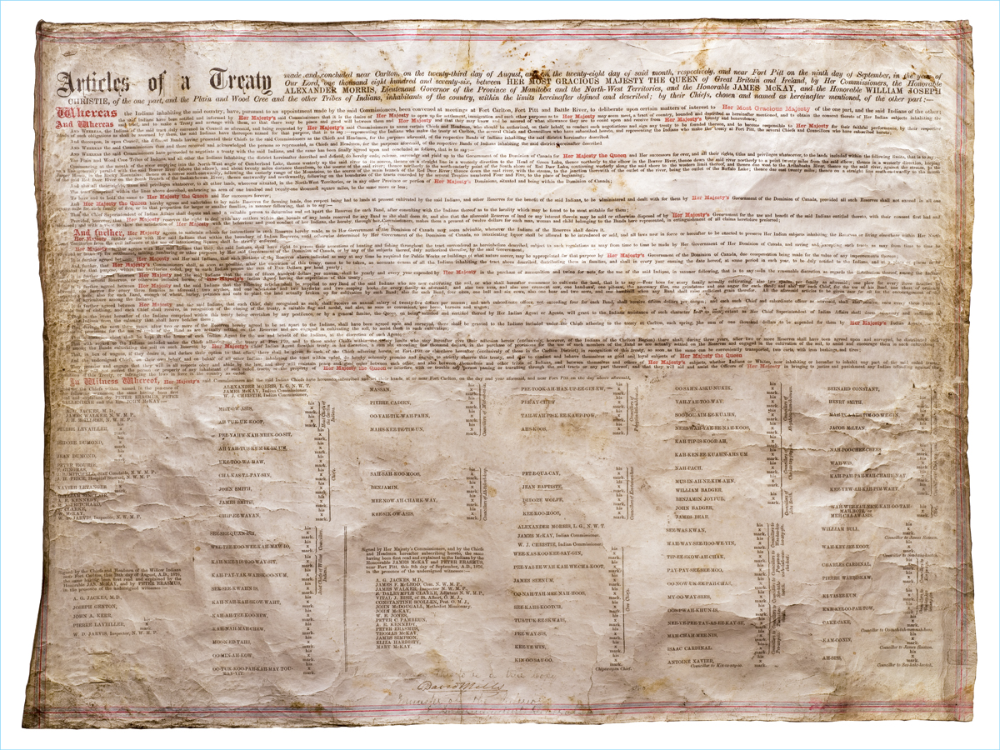

Treaty 6
TREATY NO.6

Photo Credit: Ben Wuttunee
Below is the complete text of the Treaty 6 document:
Articles of a Treaty made and concluded near Carlton on the 23rd day of August and on the 28th day of said month, respectively, and near Fort Pitt on the 9th day of September, in the year of Our Lord one thousand eight hundred and seventy-six, between Her Most Gracious Majesty the Queen of Great Britain and Ireland, and by Her Commissioners, the Honourable Alexander Morris, Lieutenant-Governor of the Province of Manitoba and the North-West Territories, and the Honorable James McKay, and the Honourable William Joseph Christie, of the one part, and the Plain and Wood Cree and the other Tribes of Indians, inhabitants of the country within the limits hereinafter defined and described by their Chiefs, chosen and named as a hereinafter mentioned, of the other part.
Whereas the Indians inhabiting the said country have, pursuant to the appointment made by the said Commissioners, been convened at meetings at Fort Carlton, Fort Pitt and Battle River, to deliberate upon certain matters of interest to Her Most Gracious Majesty, of the one part, and the said Indians of the other part.
And whereas the said Indians have been notified and informed by Her Majesty’s said Commissioners that it is the desire of Her Majesty to open up for settlement, immigration and such other purposes as Her Majesty may seem meet, a tract of country bounded and described as hereinafter mentioned, and to obtain the consent thereto of Her Indian subjects in-habiting the said tract, and to make a treaty and arrange with them, so that there may be peace and good will between them and Her Majesty, and that they may know and be assured of what allowance they are to count upon and receive from Her Majesty’s bounty and benevolence.
And whereras the Indians of the said tract, duly convened in council, as aforesaid, and being requested by Her Majesty’s said Commissioners to name certain Chiefs and Headmen, who should be authorized on their behalf to conduct such negotiations and sign any treaty to be founded thereon, and to become responsible to Her Majesty for their faithful performance by their respective Bands of such obligations as shall be assumed by them, the said Indians who make the treaty at Carlton, the several Chiefs and Councillors who have subscribed hereto, and representing the Indians who make the treaty at Fort Pitt, the several Chiefs and Councillors who have subscribed hereto.
And thereupon, in open council, the different Bands having presented their Chiefs to the said Commissioners as the Chiefs and Headmen, for the purposes aforesaid, of the respective Bands of Indians inhabiting, the said district hereinafter described.
And whereas, the said Commissioners then and there received and acknowledged the persons so presented as Chiefs and Headmen, for the purposes aforesaid, of the respective Bands of Indians inhabiting the said district hereinafter described.
And whereas, the said Commissioners have proceeded to negotiate a treaty with the said Indians, and the same has been finally agreed upon the concluded, as follows, that is to say:
The Plain and Wood Cree Tribes of Indians, and all the other Indians inhabiting the district hereinafter described and defined, do hereby cede, release, surrender and yield up to the Government of the Dominion of Canada, for Her Majesty the Queen and Her successors forever, all their rights, titles, and privileges, whatsoever, to the lands included within following limits, that is to say:
Commencing at the mouth of the river emptying into the north-west angle of Cumberland Lake; thence westerly up the said river to its source; thence on a straight line in a westerly direction to the head of Green Lake; thence northerly to the elbow in the Beaver River; thence down the said river northerly to a point twenty miles from the said elbow; thence in a westerly direction, keeping on a line generally parallel with the said Beaver River (above the elbow), and about twenty miles distant therefrom, to the source of the said river; thence northerly to the north-easterly point of the south shore of Red Deer Lake, continuing westerly along the said shore to the western limit thereof; and thence due west to the Athabasca River; thence up the said river, against the stream, to the Jasper House, in the Rocky Mountains; thence on a course south=easterly, following, the easterly range of the mountains, to the source of the main branch of the Red Deer River; thence down the said river, with the stream, to the junction there with of the outlet of the river, being the outlet of the Buffalo Lake; thence due east twenty miles’ thence on a straight line south-eastwardly to the mouth of the said Red Deer River on the south branch of the Saskatchewan River; thence eastwardly and northwardly, following on the boundaries of the tracts conceded by the several treaties numbered four and five to the place of beginning.
And also, all their rights, titles and privileges whatsoever to all other lands wherever situated in the North-West Territories, or in any other Province or portion of Her Majesty’s Dominions, situated and being within the Dominion of Canada.
The tract comprised within the lines about described embracing an area of 121,000 square miles, be the same more or less.
To have and to hold the same to Her Majesty the Queen and Her successors forever.
And Her Majesty the Queen hereby agrees and undertakes to lay aside reserves for farming lands, due respect being had to lands at present cultivated by the said Indians, and other reserves for the benefit of the sai Indians, to be administered and dealt with for them by Her Majesty’s Government of the Dominion of Canada; provided, all such representatives shall not exceed in all one square mile for each family of five, or in that proportion for larger or smaller families, in manner following, that is to say: that the Chief Superintendent of Indian Affairs shall depute and send a suitable person to determine and set apart the reserves for each band, after consulting with the Indians thereof as to the locality which maybe be found to be most suitable for them.
Provided, however, that Her Majesty reserves the right to deal with any settles within the bounds of any lands reserved for any Band as She shall deem fit, and also that the aforesaid reserves of land, or any interest therein, may be sold or otherwise disposed reserves of land, or any interest therein, may be sold or otherwise disposed of by Her Majesty’s Government for the use and benefit of the said Indians entitles thereto, with their consent first had and obtained; and with a view to show the satisfaction of Her Majesty with the behaviour and good conduct of Her Indians, She hereby, through Her Commissioners, makes them a present of twelve dollars for each man, woman and child belonging to the Bands here represented, in extinguishment of all claims heretofore preferred.
And further, Her Majesty agrees to maintain schools for instruction in such reserves hereby made as to Her Government of the Dominion of Canada may seem advisable, whenever the Indians of the reserve shall desire it.
Her Majesty further agrees with Her said Indians that within the boundary of Indian reserves, until otherwise determined by Her Government of the Dominion of Canada, no intoxicating liquor shall be allowed to be introduced or sold, and all laws now in force, or hereafter to be enacted, to preserve Her Indian subjects inhabiting the reserves or living elsewhere Her North-West Territories from the evil influence of the use of intoxicating liquors, shall be strictly enforced.
Her Majesty further agrees with Her said Indians that they, the said Indians, shall have the right to pursue their avocations of hunting and fishing throughout the tract surrendered as hereinbefore described, subject to such regulations as may from time to time be made by Her Government of Her Dominion of Canada, and saving and expecting such tracts as may from time to time be required or taken up for settlement, mining, lumbering, or other purposes by Her said Government of the Dominion of Canada, or by any of the subjects thereof duly authorized therefore by the said Government.
It is further agreed between Her Majesty and Her said Indians, that such sections of the reserves about indicated as may at any time be required for public works or buildings, of what nature soever, may be appropriated for that purpose by Her Majesty’s Governemtn of the Dominion of Canada, due compensation being made for the value of any improvements thereon.
And further, that Her Majesty’s Commissioners shall, as soon as possible after the execution of this treaty, cause to be taken an accurate census of all the Indians inhabiting the tract above described, distributing them in families, and shall, in every year ensuing the date hereof, at some period in each year, to be duly notified to the Indians, and at a place of places to be appointed for the purpose within the territory ceded, pay to each Indian person the sum of $5 per head yearly.
It is further agreed between Her Majesty and the said Indians, that the sum of $1,500.00 per annum shall be yearly and every year expended by Her Majesty in the purchase of ammunition, and twine for nets, for the use of the Indians, in manner following, that is to say: In the reasonable discretion, as regards the distribution thereof among the Indians inhabiting the several reserves, or otherwise, included herein, of Her Majesty’s Indian Agent having the supervision of this treaty.
It is further agreed between Her Majesty and the said Indians, that that following articles shall be supplied to any Band of the said Indians who are now cultivating the soil, or who shall hereafter commence to cultivate the land, that is to say: Four hoes for every family actually cultivating; also two spades per family as foresaid: one plough for ever three families, as aforesaid; one harrow for every three families, as aforesaid; two scythes and one whetstone, and two hay forks and two reaping hooks, for ever family as aforesaid, and also two axes; and also one cross-cut saw, one hand-saw, one pit-saw, the necessary files, one grindstone and one auger for each Band; and also for each Chief for the use of his Band, one chest of ordinary carpenter’s tools; also, for each Band, enough of wheat, barley, potatoes and oats to plant the land actually broken up for the cultivation by such Band; also for each Band four oxen, one bull and six cows; also, one boar and two sows, and one hand-mill when any Band shall raise sufficient grain therefore. All the aforesaid articles to be given once and for all for the encouragement of the practice of agriculture among the Indians.
It is further agreed between Her Majesty and the said Indian, that each Chief, duly recognized as such, shall receive an annual salary of twenty-five dollars per annum; and each subordinate officer, not exceeding four for each Band, shall receive fifteen dollars per annum; and each such Chief and subordinate officer, as aforesaid, shall also receive once every year, a suitable suit of clothing, and each Chief shall receive, in recognition of the closing of the treaty, a suitable flag and medal, and also as soon as convenient, one horse, harness and wagon.
That in the event hereafter of the Indians comprised within this treaty being overtaken by any pestilence, or by a general famine, the Queen, on being satisfied and certified thereof by Her Indian Agent or Agents, will grant to the Indians assistance of such character and to such extent as Her Chief Superintendent of Indian Affairs shall deem necessary and sufficient to relieve the Indians from the calamity that shall have befallen them.
That during the next three years, after two or more of the reserves hereby agreed to be set apart to the Indians shall have been agreed upon and surveyed, there shall be granted to the Indians included under the Chiefs adhering to the treaty at Carlton, each spring, the sum of one thousand dollars, to be expended for them by Her Majesty’s Indian Agents, in the purchase of provisions for the use of such of the band as are actually settled on the reserves and are engaged in cultivating the soil, to assist them in such cultivation.
That a medicine chest shall be kept at the house of each Indian Agent for the use and benefit of the Indians at the direction of such agent.
That with regard to the Indians included under the Chiefs within the treaty limires who ma hereafter give their adhesion thereto (exclusively, however, of the Indians of the Carlton region), there shall, during three years, after two or more reserves shall have been agreed upon and surveyed to be distributed each spring the Bands cultivating the soil on such reserves, by Her Majesty’s Chief Indian Agent for this treaty, in his discretion, a sum not exceeding one thousand dollars, in the purchase of provisions for the use of such members of the Band as are actually settles on the reserves, and engaged in the cultivation of the soil, to assist and encourage them in such cultivation.
That in lieu of wagons, if they desire it and declare their option to that effect, there shall be given to each of the Chiefs adhering hereto at Fort Pitt or elsewhere hereafter (exclusively of those in the Carlton district), in recognition of this treaty, as soon as the same can be conveniently transported, two carts with iron brushing and tires.
And the undersigned Chiefs on their own behalf and on behalf of all other Indians inhabiting the tract within ceded, do hereby solemnly promise to engage to strictly observe this treaty, and also to conduct and behave themselves as good and loyal subjects of Her Majesty the Queen.
They promise and engage that they will in all respects obey and abide by the law, and they will maintain peace and good order between each other, and also between themselves and other tribes of Indians, and between themselves and others of Her Majesty’s subjects, whether Indians or whites, not inhabiting or hereafter to inhabit any part of the said ceded tracts, and that they will not molest the person or property of any in habitant of such ceded tracts, or the property of Her Majesty the Queen, or interfere with or trouble any person passing or travelling through the said tracts, or any part thereof, and that they will aid and assist the officers of Her Majesty in bringing to justice and punishment any Indian offending against the stipulations of this treaty, or infringing the laws in force in the country so ceded.
IN WITNESS WHEREOFF, Her Majesty’s said Commissioners and the said Indian Chiefs have hereunto subscribed and set their hands at or near Fort Carlton, on the days and the year aforesaid, and near Fort Pitt on the say above aforesaid.
|
ALEXANDER MORRIS, L.G., N.W.T. Indian Commissioners JAMES McKAY W.J. CHRISTIE Head Chiefs of the Carlton Indians MIS-TO-WA-SIS, his mark AH-TUK-UK-KOOP, his mark Chiefs PEE-YAHN-KAH-NIHK-OO-SIT, his mark AH-YAH-TUS-KUM-IK-IM-UM, his mark KEE-TOO-WA-HAN, his mark CHA-KAS-TA-HAN, his mark JOHN SMITH, his mark JAMES SMITH, his mark CHIP-EE-WAY-AN, his mark Coucillors of Mis-to-wa-sis Mass-an, his mark Pierre Cadien, his mark Koo-ya-tik-way-pahn, his mark Mahs-kee-te-tim-un, his mark
Councillors of Ab-tuk-uk-koop SAH-SAH-KOO-MOOS, his mark BENJAMIN, his mark MEE-NOW-AH-CHAHK-WAY, his mark KEE SIK-OW-AS-IS, his mark
Councillors of Pee-yahn-kah-nihk-oo-sit PEE-TOOK-AH-HAN AP-EE-GIN-EW, his mark PEE-AY-CHEW, his mark TAH-WAH-JUSK EE-KAHP-POW, his mark AHS-KOOS, his mark
Councillors of Kee-tooo-wa-han PET-E-QUA-CAY, his mark JEAN BAPTISTE, his mark ISADORE WOLFE, his mark KEE-KOO-HOOS, his mark
Councillors of Cha-kas-ta-han KAH-TIP-IS-KOOR-AHT, his mark KAH-KUN-EE-KWAHW-AHS-UM, his mark NAH-PACH, his mark MUS-IN-AH-NE-HIM, his mark
Councillors of John Smith WILLIAM BADGER BENJAMIN JOYFUL, his mark JOHN BADGER JAMES BEAR BERNARD CONSTANT
Councillors of Chip-ee-way-an NAA-POO-CHEE-CHEES, his mark WAH-WIS, his mark KAH-PAH-PAH-MAH-CHATIK-WAY, his mark KEE-YEU-AH-TEA-PEM-WAHT, his mark
Signed by the Chiefs within named in presence of the following witnesses, the same having been first read and explained by Perter Erasmus, Peter Ballendine and Rev. John McKay:
ALF JACKES, M.D. JAS. WALKER, N.W.M.P. PIERRE LEVAILLER, his mark ISADORE DUMOND, his mark JEAN DUMOND, his mark PETER HOURIE F. GINGRAS J.B. MITCHELL, Staff Constable, N.W.M.P. E.H. PRICE, Hospital Steward, N.W.M.P. XAVIER LETANGER, his mark WILLIAM SINCLAIR A.R. KENNEDY R.I. PRITCHARD L.CLARK W. McKAY W.D. JARVIS, Inspector, N.W.M.P. Signed by the Chiefs and head men of the Willow Indians near
Chief WAH-WEE-KAH-NICK-KAH-OO-TAH-MAH-HOTE, his mark (or Neeh-cha-aw-asis)
Councillors SEE-SEE-QUAN-ISH, his mark WEE-TEE-KOO-WEE-KAH-MAW-CO, his mark
Joint Chiefs of the Willow Indians KAH-MEE-GIS-TOO-WAY-SIT, his mark KAH-PAY-YAK-WAHSK-OO-NUM, his mark SEE-SEE-KWAHN-IS, his mark
Councillors of the Willow Indians KAH-NAH-LAH-SKOW-WHAT, his mark KAH-AH-TEE-KOO-WEN, his mark KAH-NAH-MAH-CHEW, his mark MOON-ED-YAHS, his mark OO-MIN-AH-KAW, his mark OO-TUK-KOO-PAH-KAH-MAY-TOW-MAY-YET, his mark
Witnesses A.G. JACKES, M.D. JOSEPH GENTON JOHN A. KERR PIERRE LEVAILLER W.D. JARVIS, N.W.M.P.
Signed by Her Majesty’s Commissioners, and by the Chiefs
ALEXANDER MORRIS, L.G., N.W.T.
Indian Commissioners JAMES McKAY W.J. CHRISTIE
Cree Chiefs WEE-KAS-KOO-KHE-PAY-YIN, his mark PEE-YAS-EE-WAH-KAH-WE-CHAH-KOOT, his mark JAMES SEENUM, his mark OO-NAH-LAT-MEE-NAH-HOOS, his mark SEE-KAHS-KOOTCH, his mark TUS-TUSK-EE-SKWAIS, his mark PEE-WAY-SIS, his mark KEE-YE-WIN, his mark
Chipewayan Chief KIN-OO-SAY-OO, his mark
Councillors to Wee-kas-koo-pay-tin SEE-WAS-KWAN, his mark WAH-WAY-SEE-HOO-WE-YIN, his mark
Councillors to Pee-yas-ee-wah-kah-we-chah-koot TIP-EE-SKOW-AH-CHAK, his mark PAY-PAY-SEE-SEE-MOO, his mark
Councillors to See-kahs, kootch OO-NOW-UK-EE-PAH-CHAS, his mark MY-NOW-WAY-SEES, his mark
Coucillors to Tus-tusk-ee-skwais OOS-PWAH-KHUN-IS, his mark NEE-YE-PEE-TAY-AS-EE-KAY-SE, his mark
Councillors to Pee-way-sis MAH-CHAH-MEE-WIS, his mark ISAAC CARDINAL, his mark
Councillor to Kin-oo-say-oo ANTOINE XAVIER, his mark
Councillor to James Seenum WILLIAM BULL, his mark
Councillor to See-kahs-kootch WAH-KEY-SEE-KOOT, his mark
Councillors to Kee-ye-win CHARLES CARDINAL, his mark PIERRE WAHBISKAW, his mark
Councillors to Wee-kas-koo-kee-pay-yin KI-YAS-EE-KUN, his mark KAH-KEE-OO-PAH-TOW, his mark
Councillor to Oo-nah-lat-mee-nah-hoos CAKE-CAKE, his mark
Councillor to James Seenum KAM-OO-NIN, his mark
Councillor to See-kahs-kootch AH-SIS, his mark
Witnesses A.G. JACKES, M.D. JAS. McLEOUD, Commissioner, N.W.M.P. JAS. F. WALKER, Inspector, N.W.M.P. +VITAL J., Bishop, St.Albert, O.M.I. E.DALRYMPLE CLARKE, Adjutant., N.W.M.P. CONSTANTINE SCOLLEN, Priest, O.M.I. JOHN McDOUGALL., Methodist missionary JOHN McELVEY W.E. JONES PETER C. PAMBRON A.R. KENNEDY PETER ERASMUS THOMAS McKAY JAMES SIMPSON ELIZA HARDISTY MARY McKAY Recorded 24th February, 1877. Lib. 27, Fol. 352. L.A. CATELLIER, Deputy Registrar-General of Canada. |
|
| Images used with permission from the Historical Library and Archives Canada. |